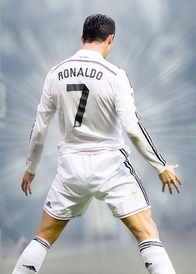
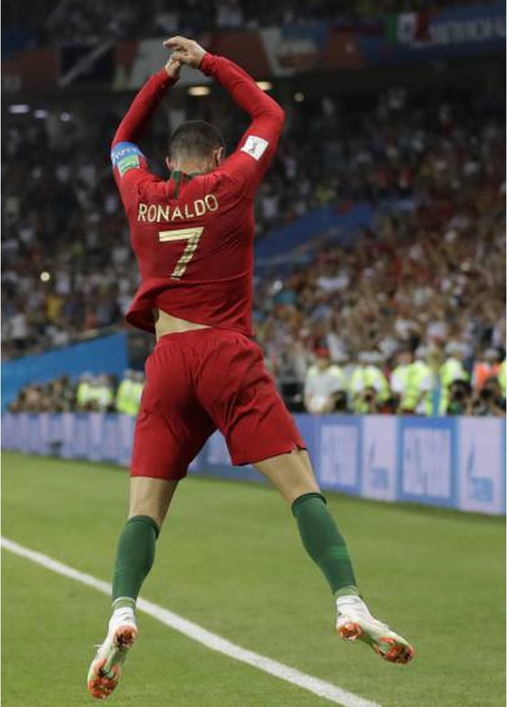

Who is CR7
Cristiano Ronaldo dos Santos Aveiro, born 5 February 1985) is a Portuguese professional footballer who plays as a forward for and captains both Saudi Pro League club Al Nassr and the Portugal national team.
I'm Handsome
Originating from a post-match interview during Ronaldo's time at Real Madrid, the "Sou Lindo" meme emerged when the football star humorously responded to a fan's declaration of admiration by simply stating, "Sou lindo, sim ou não?".
GOAT
Awards
Widely regarded as one of the greatest players of all time, Ronaldo has won five Ballon d'Or awards, a record three UEFA Men's Player of the Year Awards, and four European Golden Shoes, the most by a European player. He has won 33 trophies in his career, including seven league titles, five UEFA Champions Leagues, the UEFA European Championship and the UEFA Nations League. Ronaldo holds the records for most appearances (183), goals (140) and assists (42) in the Champions League, goals in the European Championship (14), international goals (128) and international appearances (205). He is one of the few players to have made over 1,200 professional career appearances, the most by an outfield player, and has scored over 850 official senior career goals for club and country, making him the top goalscorer of all time.
